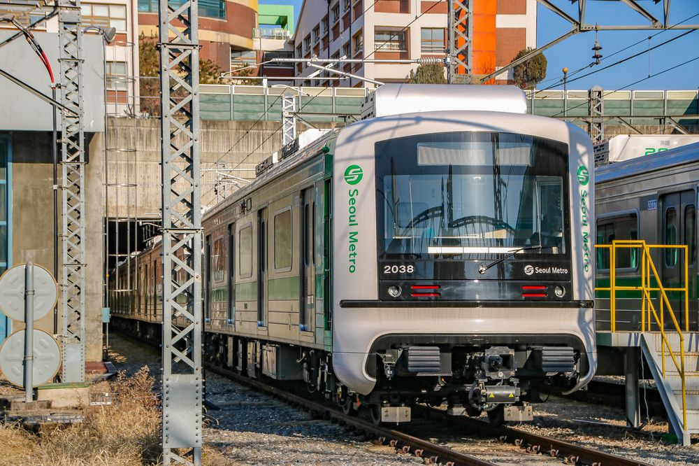
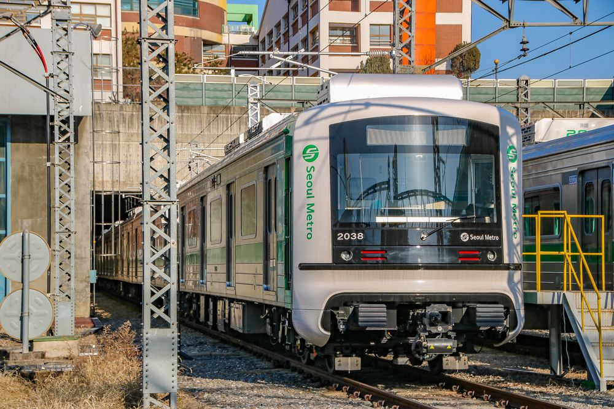
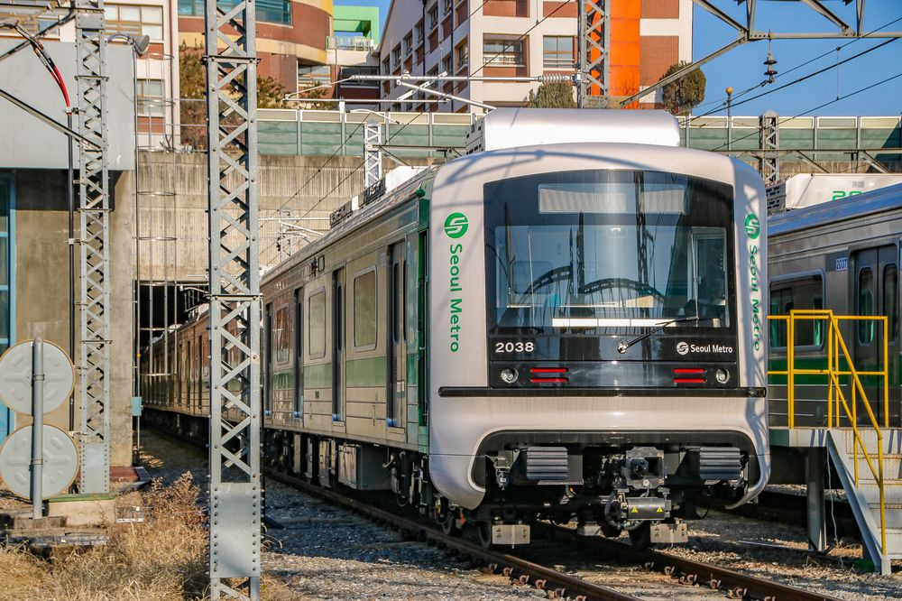
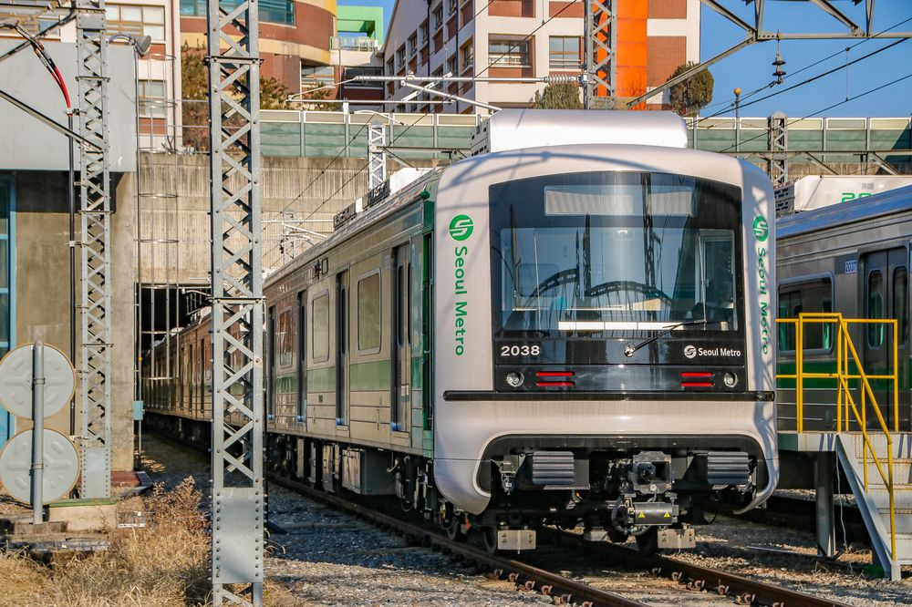

 

순환
성수지선
신정지선
서울 지하철 2호선(서울 地下鐵 2號線) 혹은 수도권 전철 2호선
(首都圈 電鐵 2號線)은 대한민국 서울 지하철 노선이자, 수도권
전철의 운행 계통이다. 서울 주요 지역을 순환하는 을지로순환
선, 성수역과 신설동역을 잇는 성수지선[내용주 1], 신도림역
과 까치산역을 잇는 신정지선으로 구성된다.
운행 계통은 을지로순환선을 시계 방향과 반대 방향으로 순환하는
내선순환, 외선순환과 성수지선, 신정지선을 왕복하는 운행 계통
이 있다. 노선 안내 등에 사용되는 색상은 ■녹색이고, 색의 뜻은
환경이다.
2012년 기준으로 서울 지하철 2호선은 대한민국에서 가장 붐비는
노선으로 서울 지하철 전체 이용 승객의 31%인 일평균 204만
8000명이 이 노선을 이용하고 있다.[2] 전 구간을 서울교통공사가
담당한다. 통행방향은 어디서든 우측통행이다.